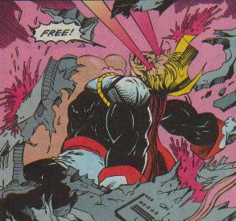
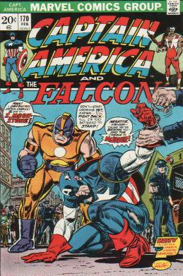
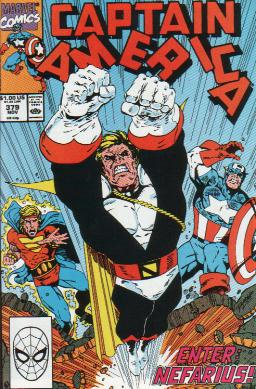
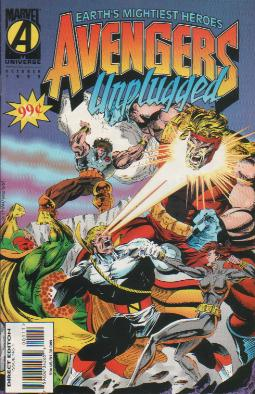

Nefarius
Nefarius was originally Lloyd Bloch. Lloyd Bloch used to go by the name of Moonstone. He was the original posessor of the Moonstone now possessed by Karla Sofen. When Karla took the stone she left Lloyd a complete psychotic. After he regained his sanity he found one of his fellow patients had found a way to recreate the process that gave Count Nefaria his immense power. Since then Lloyd has spent all of his time trying to get revenge on Karla for her abuse of him.
Captain America #170- flashback- Lloyd breaks into a small midwestern university in order to steal some moon rocks for a European collector. He picks up a blue rock and it starts to glow. Security arrives. Frustrated he throws his bag of tools at them. He sees that he seriously injured one of them. He figures he has to get away now to avoid a potential murder charge. The other guard shoots and hits the Moonstone. The stone merges with his fist, and his fist starts to disappear. The guard is stunned. Lloyd goes to swing at the guard, but a blast escapes from his hand. Lloyd thinks that it must be something about him that caused this to happen since dozens of other people must have touched the rock before him. Later Lloyd figures that if he designed some armor he could make a fortune now. He dons his costume and names himself Moonstone. Moonstone goes to Haderman and the Viper to join up with them. Haderman wants Moonstone to lay low. Haderman starts an ad campaign to discredit Captain America.
Captain America #169- Moonstone’s partner Quentin Haderman has started a smear campaign against Captain America. He questions Captain America’s ethics, why he is on the outs with SHIELD, why he is dressed in the flag when no agency takes responsibility for his actions. When Cap confronts Haderman, Quentin sets him up by staging a crime outside. Tumbler gets away from Cap. Later Cap sees Haderman with a man named Keane. Cap recognizes Keane as Tumbler’s secret identity. Cap attacks. From a secret sniper spot Moonstone uses a sliver thin laser beam to shoot Keane through the skull. Keane drops dead and it looks like Captain America killed him during their fight.
Captain America #170- Captain America runs from the police. He thinks to himself that as a believer in due process he has to turn himself in, but he never gets the chance as he is hit from behind by Moonstone. Moonstone says that he is going to replace Captain America and restore honor where he has left disgrace. Captain America says that it sounds like Moonstone is reading from Haderman’s book. Cap and Moonstone clash. Moonstone hits Cap and he goes flying. Cap uses his shield to cushion his landing. Moonstone is quickly upon Cap, and Cap has to quickly move his shield to block Moonstone’s punch. Cap hits Moonstone and is stunned when Moonstone isn’t knocked out. Cap leaps at Moonstone, but Moonstone vanishes and reappears behind him. Moonstone says that he is tired of toying with Cap. He hits Cap with an energy blast from his hand. Cap is knocked out. Haderman comes along and says that by right of American competition they have a new defender…Moonstone. The crowd cheers. Later Cap wakes up in jail as the reporters talk to Moonstone. They ask what his background is, and how he got his powers. Moonstone tells them he was a janitor at a University when he touched a blue moon rock and gained his power. He names himself Moonstone, and joins up with his committee to battle everything evil. Haderman and Moonstone leave Cap in jail and go. Later a group of Cap supporters break down the wall to the prison.
Captain America #171- Cap tries to decline the offer, but when the guards show he has to fight his would be liberators to stop them from killing the police. The Sanitation Unit gasses them all and takes Cap with them. Cap wakes before they know and discovers that the Sanitation Unit is just another attempt by Haderman to make him look bad. Cap gets away. Later the Falcon has returned from Wakanda with new wings that allow him to “glide”. Falcon finds Cap and Cap tells him all about how he was set up. Falcon says that he will help Cap. Suddenly Moonstone speaks up and tells Falcon that he just taped what he said to prove to America that he is Cap’s criminal accomplice. Cap tells Moonstone to admit that he and Haderman are just setting him up. Moonstone says that the recorder is off so why not. He even admits that he was the one who killed Tumbler. Cap asks why Moonstone is doing this. Moonstone says the answer is easy…money and power coupled with the enjoyment of watching Cap destroyed. Falcon leaps up and starts to “glide” towards Moonstone. Moonstone flies up and blasts Falcon with a hand blast. Falcon is knocked out and spiraling to the ground. Cap catches him, but because he is distracted Moonstone flies up behind him and grabs Cap’s shoulders. Moonstone blasts Cap, and then stands over the unconscious bodies of Falcon and Captain America.
Captain America #172- Moonstone is just about to kill Captain America and Falcon when Quent stops him. Quent says that no matter how well the smear campaign has worked that killing Cap and Falcon would make them martyrs. He tells Moonstone to take the capture to the media who are already favoring them. Moonstone leaves Cap and Falcon with the “Sanitation Squad” for them to guard them while he goes and calls the media. Cap and Falcon wake up before he returns and as Moonstone walks back Cap and Falcon knock him over. Cap says that sorry he can’t stay but he can’t risk Moonstone defeating them again before he can prove his innocence. Moonstone watches them run off because he doesn’t want to risk losing in public. Moonstone yells at the Sanitation Squad, but then tells them that they better hit him in the back of the head so he will have proof when he tells the reporters he just called that Cap hit him in the back of the head.
Captain America #174- Captain America and Falcon have learned from the X-Men that their true common enemy has been the Secret Empire. They disguise themselves and help to steal the Electron-Gyro from the Brand Corporation in order to appear like they want to join the Secret Empire. Cap leaves a note explaining, not realizing that the head of the Brand Corporation also belongs to the Secret Empire. Captain America, Falcon, Professor X, Marvel Girl, and Cyclops fight against the Secret Empire. Elsewhere Moonstone appears on a morning talk show. The interviewer asks how it feels to be America’s newest idol. Moonstone says that it is tough living with danger, but when he thinks about how his first arrest was the fallen idol Captain America he says it makes it all worthwhile. Another guest, the blond sexy Miss Kearny, flirts with Moonstone. Moonstone says that with Captain America and Watergate he is happy to do his part to hold together this great nation. Cap and the others find the mutants Lorna Dane, Havok, Mesmero, Angel, Iceman, Beast, Mastermind, Unus, and Blob all hooked up to some “hideous machine”. They get them off, but Cap, Falc, Prof. X, Jean, and Cyclops are killed when the Secret Empire shoots them with the “Atomic Annihilator”.
Captain America #175- Cap, Falcon, and the X-Men have been “killed” by the Secret Empire, but the one who shot them was an undercover SHIELD agent who used a non-lethal setting. Moonstone and Quentin Harderman walk out of a congressional hearing. Quent says that it al went smoothly. As they gloat about how they manipulated the truth to make Moonstone a hero they suddenly see that their allies, the Secret Empire, are attacking the White House. The Secret Empire has a weapon/ship powered by the captured mutants. Number One (the leader) says that they are powerless to stop them. Moonstone flies over as a hero to “oppose” the Secret Empire. Number One sends out his marshall of the warrior squad, Number Two. Moonstone takes a dive and is taken captive by the Secret Empire. Inside the ship Moonstone and Number Two congratulate each other on their performances. Moonstone walks out of the ship and tells everyone how hopeless the fight is. Number One says that the Sanitation Squad is planting nuclear devices and that if America doesn’t surrender that he will order the destruction of every major city. Suddenly Cap, Falcon, Cyclops, and Jean Grey rise to oppose the Secret Empire. Falcon rushes off to tell SHIELD the bomb locations. Moonstone sees Cap and says that he sees Cap has come to join his Secret Empire friends. Cap says that is the last lie that he will tell about him. Cap plows into Moonstone. Moonstone blasts Cap, but hits his shield. Cap throws the shield into Moonstone’s face. Cap beats Moonstone down. Harderman tries to say that he was duped, but Moonstone implicates him too. Moonstone tells every camera going coast to coast the entire thing. Number One turns out to be a high ranking government official. Number One kills himself instead of being captured.
Incredible Hulk vol. 2 #229- flashback- Karla Sofen is called in to try and cure Lloyd. It's costing them a fortune to keep him contained in the special cell. Once alone Karla uses a combination of a special gas and a technique called Total Voice Control, that she learned from Dr. Faustus, to cause him to see himself as a monster. Karla tells him that the Moonstone is making him a monster. He gives her the Moonstone. Karla absorbs the Moonstone. The guards rush back in to find Lloyd collapsed. Karla tells them that he burned out his power in one great psychic trauma.
Captain America #379- flashback- After Karla takes the power of the Moonstone from Lloyd he is left a total psychotic. Lloyd is institutionalized. It takes him years of therapy to get back to a sane state of mind. While inside Lloyd meets an inmate who rediscovered the process that made Count Nefaria into a dynamo. When they were released Lloyd convinces his friend to try the process on him. Lloyd is turned into Nefarius.
Captain America #379- Captain America and Quasar are called during their jog for an Avengers priority at the city courthouse. Two people have been killed, but no description of the villain. As they arrive Nefarius smashes through the courthouse wall with Moonstone under an arm. Karla is wearing manacles and boots that prevent her from using her powers. Cap recognizes the outfit as belonging to Count Nefaria. Cap and Quasar get closer to try and negotiate with their unknown opponent. Nefarius instantly recognizes Captain America. Cap asks if he knows him. Nefarius says that he doesn’t anymore. Nefarius shoots eye blasts. Cap blocks the beams, but almost hits Moonstone with the ricochet. Nefarius says that if anyone gets to hurt her it will be him. Nefarius leaps away, and warns Cap that he will kill her if he follows. Moonstone asks Nefarius where he is taking her. Nefarius says he will tell her when they get there. He also tells her to shut up and enjoy the ride. As Nefarius leaps off the top of a building pieces of rubble fall. Quasar catches the rubble with an energy construct. As they chase after them Captain remembers the face and name of Nefarius. He remembers his name Lloyd Bloch, and that he once fought him when he was the old Moonstone. Nefarius lands near a church. He goes inside to hide from Captain America and Quasar he says until he is done with Moonstone. Moonstone asks what Lloyd wants from her. Nefarius says that he wants to kill her for when she took advantage of him. Lloyd tells her how he was institutionalized after she stole his Moonstone, and how he got his new power. He says that he has the power to do whatever he wants, and what he wants is to kill Karla. Karla asks if he is going to kill her there in the church. Nefarius says that funeral services are held there all the time. Karla apologizes to Nefarius for hurting him, and that she has been racked with guilt since. She explains that she saw his power and coveted it. She says that the power blinded her to the man behind the power. Karla tries to come on to him, but Nefarius says to forget it. He tells her to pick the first bone he will break. Karla says that Nefarius is obsessed with her not out of hate, but out of love. She says that he has been fantasizing about her that whole time. She asks why kill her when he can posses her utterly. She says that she wants him to possess her, and that she has been looking for a virile enough man to dominate her. She asks that they love each other as only superior beings can. She asks Nefarius to release her manacles so that she can caress and make him feel like nobody ever has. Nefarius uses his eye blasts to destroy the manacles. Just as her arms are free Cap shows up and grabs Moonstone. Quasar buts a bubble around Nefarius’ head to stop his eye blasts, and holds him with a band around his body. Nefarius leaps through the ceiling of the church with Quasar in tow. Quasar forms a bubble all the way around Nefarius. Nefarius is thrashing about inside. Quasar tries to reel the bubble in, but brings it too close and Nefarius knocks him out through the bubble. Nefarius holds Quasar as he drops to the ground. Cap throws his shield, but Nefarius catches it in his teeth. He throws Quasar at Cap, and grabs the unconscious Moonstone. As he walks away Moonstone wakes up and blasts him between the ears. Nefarius falls on her. Quasar wakes up and transports both Nefarius and Moonstone to the Vault.
Captain America #443- The Black Crow helps Captain America up and tells him that he had a vision of him dying from the super soldier serum that will cause his heart to stop in 24 hours. Captain America uses his armor to fly back up at Nefarius. Cap tries to shoot Nefarius with his mini-rockets, but Nefarius’ heat vision throws off the missiles. Captain America realizes that if he really only has 24 hours to live he should just let the Avengers handle Nefarius. He goes to deal with personal matters.
Avengers Unplugged #1- The Avengers watch as Nefarius is taken in full body restraints back to the Vault. They wheel him past the cell of Karla Sofen, Moonstone. He says that he was right. He broke out of the Vault to look for her not realizing that she was inside the Vault. Nefarius starts to freak out, and they quickly wheel him into another room. Nefarius shatters his restraints. He starts destroying the Guardsmen. Nefarius rips the face off one of their masks, and then smashes his face against the ground. Nefarius sees that some of the Guardsmen are women. This fuels his anger as they remind him of Moonstone. He eyeblasts them. Nefarius bursts through the wall of Moonstone's cell. Moonstone tries coming on to Nefarius, but he says he isn't a fool and throws her into the wall of her cell. The Avengers are trying to help, but are divided by the energy bars. Nefarius forces Moonstone to tell him which bone she wants broken. She says arm and he snaps it. Hercules tackles Nefarius. Nefarius throws him off. Moonstone leaps out through the hole Nefarius made so that the power dampeners would no longer affect her. Moonstone falls down the elevator shaft until her powers kick back in. Moonstone hits the Vision away from her. Vision hits Giant-Man, and Nefarius goes off to look for Moonstone. Grey Gargoyle tries to get Nefarius to release him, but Nefarius just eyeblasts him. The Avengers come back again. Herc tackles Nefarius and starts wailing on him. After Herc pounds and pounds Nefarius asks if he is finished. Nefarius eyeblasts him off. As Giant-Man swings Nefarius jumps over him and attacks him from behind. Vision turns diamond hard and walks towards Nefarius as Nefarius eyeblasts him. Now white-hot Vision creates a passage all the way out of the Vault as Nefarius punches him clear through the building. Giant-Man, Herc, occupy Nefarius until Vision returns. Giant-Man and Herc hurl a diamond hard Vision at Nefarius knocking him out.
Iron Man annual '99- Nefarius watches the Thunderbolts rescuing construction workers from a burning construction site. He sees Moonstone and festers in his hatred. He gets ready to take his revenge when a mist engulfs Nefarius leaving him a husk. Count Nefaria fed upon his ionic energy.